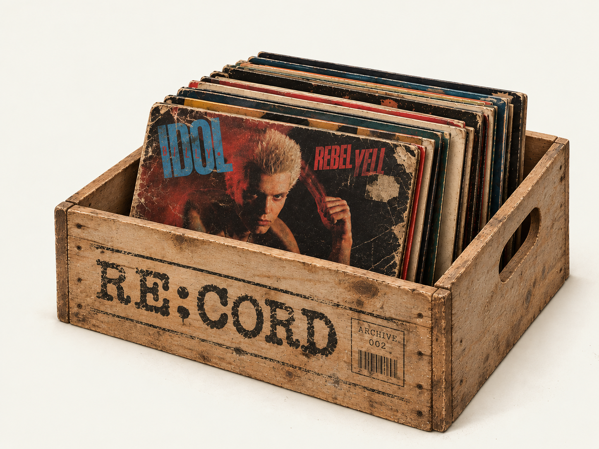

Daft Punk
Discovery
Explore Daft Punk's landmark second studio album and its critical reception across major music publications.
RE:CORD Shuffle
Don't know what
to listen to?
Leave it up to chance. Shuffle the collection and discover an album you might have missed.

Find a record
Looking for
something specific?
About RE:CORD
Music discovery
without the endless
scrolling.
Find the record. Hear the record. Know the record.
RE:CORD is a music discovery project centered around albums, artists, and critical reception. Explore a featured record, search the archive, or leave your next listen up to chance.
Find something you haven't heard.
Dig deeper into the record.
Spend less time choosing.